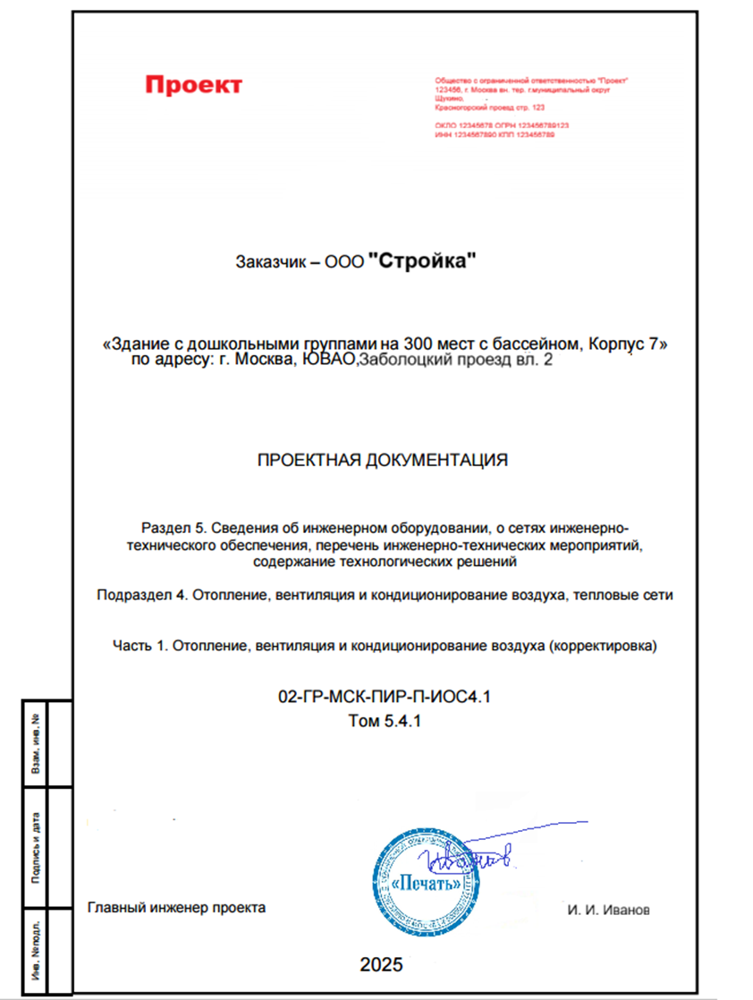
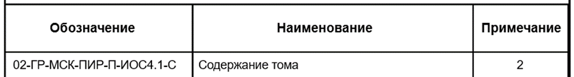
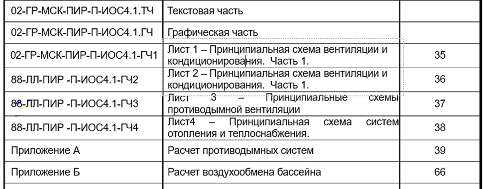
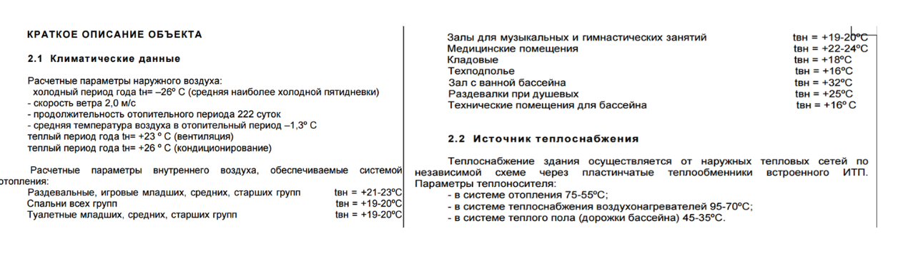
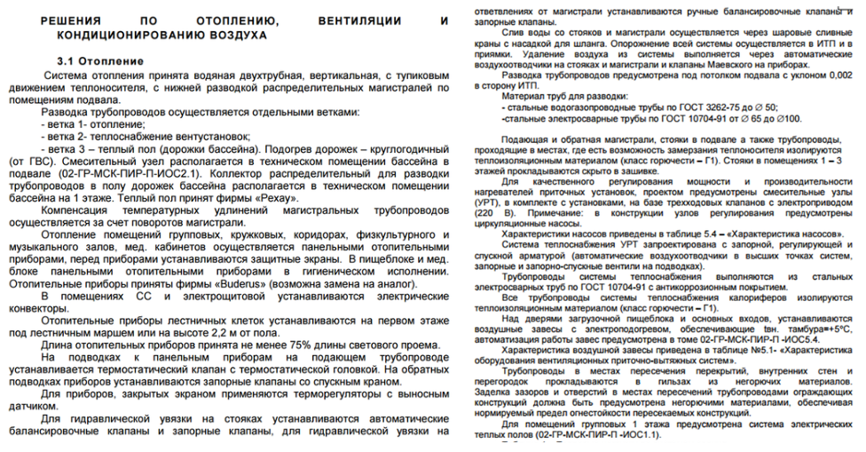
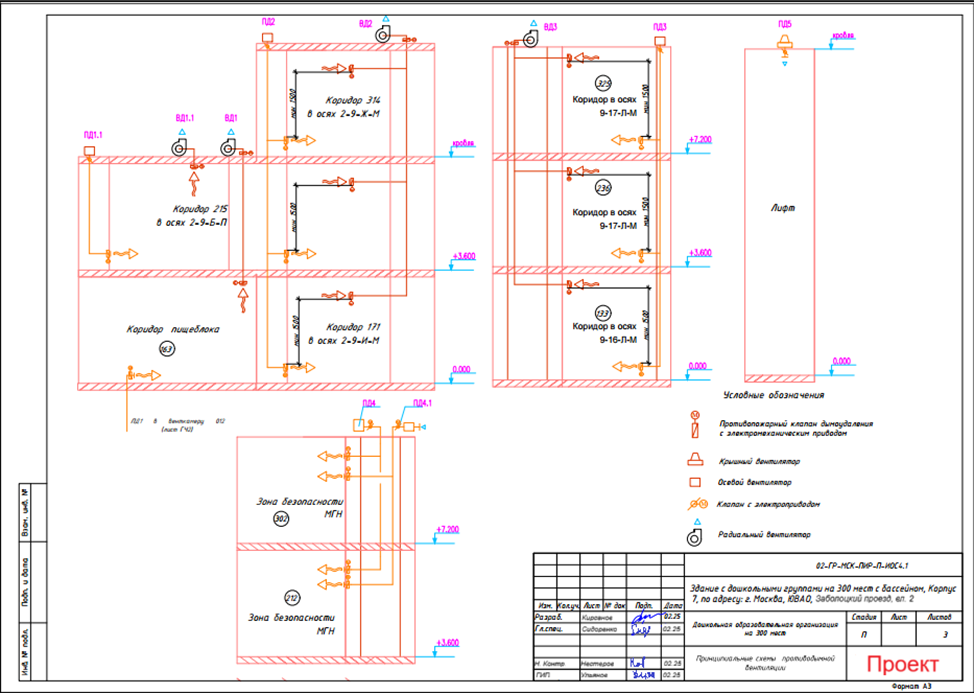

Первое знакомство с Проектной документацией

В этом уроке мы разберем проектную документацию на части, из которых она состоит и подробно рассмотрим каждую из них.
Проектная документация состоит из текстовой и графической частей. В текстовой части отражены описания принятых технических и иных решений, в том числе значения параметров и другие проектные характеристики зданий, строений и сооружений, направленные на обеспечение выполнения установленных требований, пояснения, ссылки на нормативные и технические документы, исходные данные для проектирования (в том числе результаты инженерных изысканий), используемые при подготовке проектной документации, и результаты расчетов, обосновывающие принятые технические и иные решения. В графической части же отображаются наглядно все принятые технические решения.
Текстовая часть по каждому разделу идентична, это расчетные характеристики, обоснования принятых решений и перечень мероприятий для обеспечения эффективной работы систем.
В этом уроке мы с вами пройдемся по жизненно необходимому разделу ПД – «Отопление, вентиляция и кондиционирование воздуха, тепловые сети».
Рассмотрим наглядно, какие сведения содержит данный проект согласно ПП РФ №87, что он из себя представляет.
Первое, что мы видим – титульный лист. Обычно его подготавливают ГИП или его помощник, на нем ставятся подписи и печать организации.

Затем идет содержание документа, оно оформляется согласно ГОСТ Р 21.101-2020.


Когда формируете комплект ПД, следуйте порядку, который указан в Постановлении №87. Это облегчит работу и вам, и эксперту, проверяющему документацию.
Далее в ПД идет описание согласно пункту а) ПП РФ №87. Важно прописывать откуда взяты эти данные, например, из задания на проектирования или из СП 131.13330.2020. Это облегчит работу экспертизы и повысит четкость и прозрачность документации.

Затем описываются сведения об источниках теплоснабжения, параметрах теплоносителей систем требованиях к надежности и качеству теплоносителей, а также описание и обоснование способов прокладки и конструктивных решений, включая обоснование принятых диаметров и расчеты по вентиляции.

То есть вы описываете все решения, приводите их обоснование и меры по их безопасному применению. Простыми словами: что нужно, чтобы все работало в таком виде долго, качественно и безопасно.
| Что должно быть в текстовой части | Для чего это необходимо |
| Описание принятых технических решений | Для понимания, почему выбрана именно эта система |
| Расчетные параметры | Температуры, давления, расходы воздуха/воды для подбора оборудования |
| Ссылки на нормативы | Чтобы подтвердить соответствие требованиям |
| Обоснования решений | Почему труба стальная, а не пластиковая? |
| Исходные данные | Результаты изысканий, ТУ, климатические условия |
| Перечень мероприятий | Что нужно сделать для безопасной эксплуатации |
Любой параметр, каждое решение, оборудование принятые в ПД должны быть обоснованы в текстовой части
И самое интересное – все принятые решения в текстовой части отображают на принципиальных схемах. Они подготавливаются на каждую систему отдельно.

Старайтесь делать чертеж, так чтобы он был понятен всем: смотрите на условные обозначения, все ли они указаны, а также соответствуют ли чертежи принятым решениям.
Мы с вами ознакомились с тем, как выглядит комплект проектной документации для ОВиК, согласно ПП РФ №87. Теперь вы имеете представление о том, что необходимо будет от вас на практике.